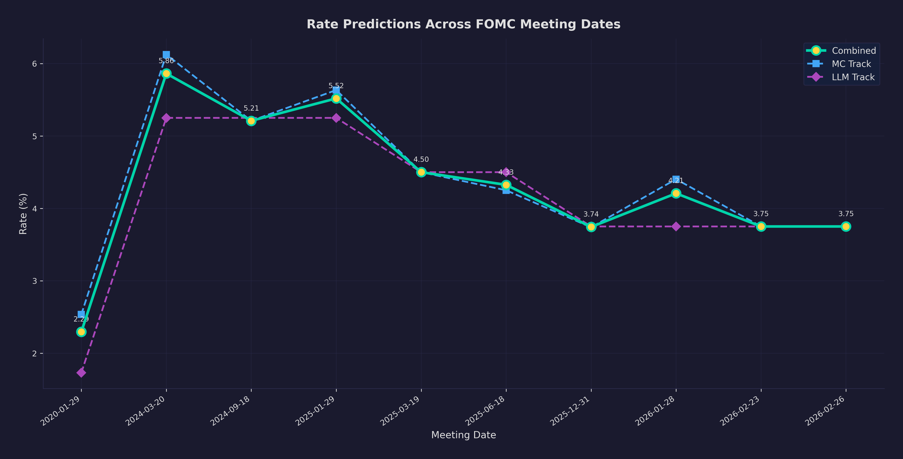

What I Learned Building an 80,000-Line AI Simulation of the Federal Reserve
Series conclusion — the compound effect of thousands of small decisions, what the project taught me about building complex systems, and running the first live FOMC prediction.
Over twelve articles, I have described the architecture, implementation, and evaluation of a multi-agent simulation platform for Federal Reserve monetary policy. Ten microservices. Three databases. A RAG pipeline with vector search and knowledge graph. Bayesian and Monte Carlo engines. LLM-powered deliberation with 19 agents. A 16-page React dashboard. A backtesting framework that honestly assesses what works and what does not.
This final article is about what the project taught me — and what happens when we point it at a live FOMC meeting.
The Compound Effect of Small Decisions
The hardest thing about a project this size is not any individual component. It is the thousands of small engineering decisions that compound.
Should the economy service store vintage data locally or query ALFRED at simulation time? Should the knowledge graph use Neo4j or NetworkX? Should the deliberation service rewrite assistant messages to user messages in GroupChat? Should the Monte Carlo track use correlated or independent signals? Should personas be absolute (prior_mu: 5.25) or relative (stance_offset: +0.50)?
Each decision is individually minor. But they interact. The vintage data decision affects backtest reliability. The graph choice affects deployment complexity. The message rewriting affects persona maintenance. The signal correlation affects committee dynamics. The stance offset affects temporal portability.
You cannot make these decisions in advance. You make them as you go, informed by the decisions you have already made, and you live with the ones you got wrong. The stance_offset migration happened eight months into the project, after backtesting revealed that absolute priors broke across rate regimes -- a problem that could have been caught earlier with a more disciplined approach to parameter design. Every simulation parameter should be defined relative to the current state, not pinned to an absolute value. The message rewriting fix came after two weeks of debugging persona collapse in multi-round deliberation. The batched analysis mode in the Beige Book service was a performance optimization that only became obvious after the granular mode proved catastrophically slow on a single GPU.
If I started over, I would build the backtest framework first. Backtesting revealed fundamental issues -- regime change blindness, calibration overconfidence, the LLM data leakage question -- that would have shaped architectural decisions if I had known about them earlier. The evaluation framework should drive the design, not the other way around. I would also start with the dashboard, not the backend. Building ten microservices before building the frontend meant half the API endpoints were never used, and several visualizations required data that no endpoint provided. A mock dashboard first forces you to define what data you actually need.
The skill is not making perfect decisions. It is making recoverable ones — and recognizing when a decision needs to be reversed.
What Actually Matters in Multi-Agent Systems
After building five services that use LLM agents, I have strong opinions about what matters and what does not.
Structured output extraction matters more than prompt engineering. I spent weeks refining agent prompts. The actual reliability breakthrough was the multi-format JSON parser with Qwen3 think-block stripping, last-brace fallback, and range validation. Getting LLMs to produce structured data is a parsing problem at least as much as a prompting problem.
Concurrency models must match hardware. The Beige Book service's move from parallel to sequential district processing — counterintuitive on paper — delivered a 3x speedup on a single GPU. Theory says parallelize everything. Practice says understand your bottleneck.
Graceful degradation is non-negotiable. Every LLM call in the system has a non-LLM fallback. Batched mode falls back to granular. Granular falls back to rule-based. The verification agent falls back from TF-IDF to keyword overlap. If your system requires every LLM call to succeed, your system does not work.
Context providers are the most underrated pattern. The ability to inject dynamic state before each agent turn — and to rewrite conversation history — solved problems that no amount of prompt engineering could fix. The GroupChat role-rewriting bug alone justified the entire framework investment.
Stateless services are underappreciated. The comparison service — no database, no cache, pure functions — is the most reliable, testable, and deployable service in the platform. Not everything needs state.
Use fewer, larger services. Ten microservices was arguably three too many. The hawk-dove service, belief-formation service, and member service could have been a single service without meaningful loss of separation of concerns. The deployment and debugging overhead of each additional service is real -- and I say this having built and maintained all ten.
The First Live Analysis
The January 28-29, 2026 FOMC meeting was the first live test. Here is what happens when I point the platform at a live decision for the first time.
Phase 0 — Data Collection. The economy service pulls the latest vintage data from FRED, BLS, and BEA. The Beige Book service generates a synthetic district report from current indicators and news. Everything is timestamped — we will know exactly which data the agents saw.
Phase 1 — Belief Formation. Each of the 19 agents receives the economic briefing and forms an initial rate belief. The stance offsets, calibrated from speech data through the persona factory, anchor each agent to their characteristic position relative to the current FFR.
Phase 2 — Dual-Track Prediction. The Monte Carlo track runs 10,000 committee simulations. The LLM deliberation track runs a full five-round meeting. Both execute in parallel — CPU-bound and GPU-bound workloads overlapping.
Phase 3 — Comparison. The comparison service reconciles the two tracks. Pearson correlation on per-agent beliefs. Welch's t-test on rate distributions. Cohen's d effect size. Agreement classification.
The Output. A probability distribution over rate actions, a committee dot plot, belief evolution traces for all 19 agents, a full deliberation transcript, and a calibration assessment based on the backtest track record.
The results — predictions, reasoning traces, and a post-decision assessment — demonstrate that the reasoning trace is valuable regardless of whether the point prediction was correct.
The Real Point
This project is not about predicting the Fed. Fed Funds futures markets do that with more liquidity, more information, and more incentive alignment than any simulation can match.
The point is the structure. The platform is a framework for organizing economic reasoning — for asking "what would 19 informed people with different perspectives conclude from the same data?" That question is useful whether the final rate prediction is right or wrong.
It is also a demonstration of what one person can build with modern tools. Ten microservices, three databases, a RAG pipeline, Bayesian engines, multi-agent LLM orchestration, a React dashboard, and a backtesting framework — built over evenings and weekends by a treasury analyst who has been writing Python since 2010. The tools are better than they have ever been. The barriers are lower than they have ever been. The projects worth building are more ambitious than they have ever been.
If this series has sparked ideas for your own work — whether in finance, AI engineering, or something else entirely — I would enjoy hearing about it.
— Vincent
Thank you for reading the complete 13-part series on the FOMC Simulation Platform. If you found value in these articles, sharing them with a colleague who works at the intersection of finance and AI would mean a lot. Subscribe for the live FOMC analysis and future projects.
Charts
